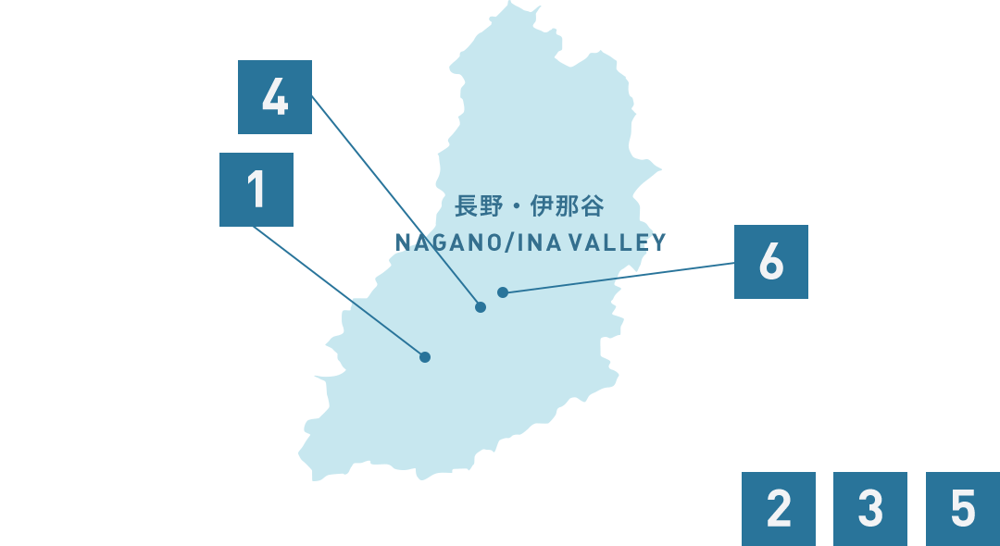
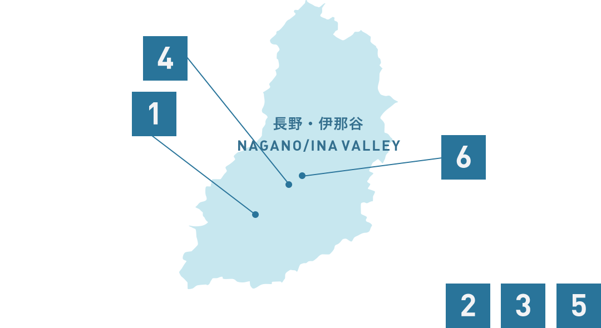

Shimoguri no Sato
"ดื่มดำกับทิวทัศน์สวยงามจนลืมไม่ลง บนความสูง 800-1,100 เมตรจากระดับน้ำทะเล บรรยากาศแสนสงบแซมด้วยไร่นาและบ้านเรือนจนได้ฉายาว่า ทีร็อลแห่งญี่ปุ่น

Ina Valley, NaganoShimoguri no Sato
Shimoguri Kamimura, Iida, Nagano 399-1403
0260-34-1071
"ดื่มดำกับทิวทัศน์สวยงามจนลืมไม่ลง บนความสูง 800-1,100 เมตรจากระดับน้ำทะเล บรรยากาศแสนสงบแซมด้วยไร่นาและบ้านเรือนจนได้ฉายาว่า ทีร็อลแห่งญี่ปุ่น
ฤดูกาลที่แนะนำ
ฤดูใบไม้ผลิ
ฤดูร้อน
ฤดูใบไม้ร่วง
ฤดูหนาว
จำนวนวันเข้าพักที่แนะนำ
2 วัน
4 วัน


 
